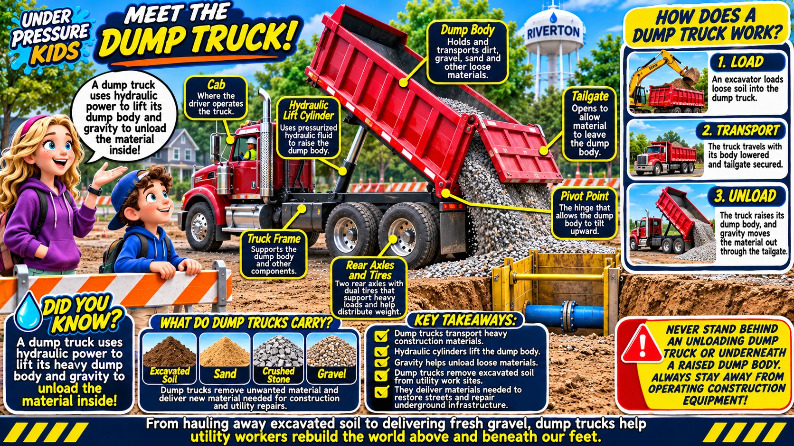

Meet the Dump Truck

Max watched an excavator scoop dirt from a construction site in Riverton and drop it into the back of a big truck.
“Where does all that dirt go?”
Bolt explained that moving dirt is one of the many jobs of a dump truck!
Built to Carry Heavy Loads
Dump trucks help workers transport soil, sand, gravel, broken pavement and other materials.
Their strong frames, large tires and powerful engines help them carry much heavier loads than ordinary pickup trucks.
How Does It Dump?
A dump truck has a large container called a dump bed.
A hydraulic cylinder lifts the front of the bed, allowing the material inside to slide out through the back.
Gravity helps do the rest!
Working Together
Excavators and dump trucks often work as a team.
The excavator digs and loads the material, while the dump truck carries it away.
Dump trucks also deliver stone, sand and other materials that workers need to complete underground pipe installations and repairs.
Different Trucks for Different Jobs
Some dump trucks are small enough to work in neighborhoods.
Others are enormous machines designed to carry heavy loads across mines and large construction sites.
Each truck is built for a particular kind of work.
Did You Know?
Some of the world's largest mining dump trucks can carry more than 400 tons of material in a single load!
Your Next Discovery
The next time you see a dump truck, look at its tires, dump bed and tailgate.
Can you spot the differences between a dump truck and an ordinary pickup truck?
Always stay a safe distance from working trucks, especially when they're backing up or unloading.
Keep exploring! There's an amazing world beneath your feet.